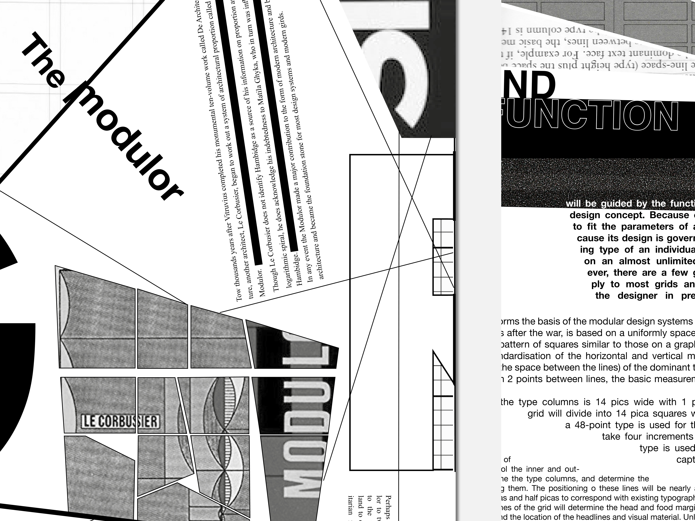
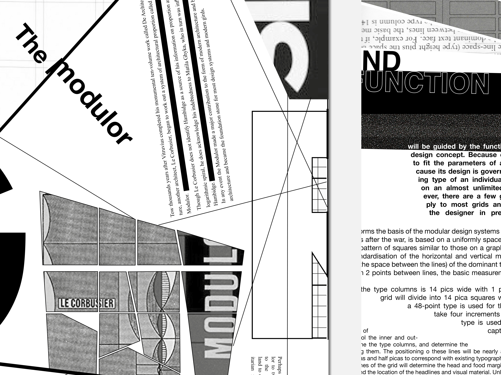
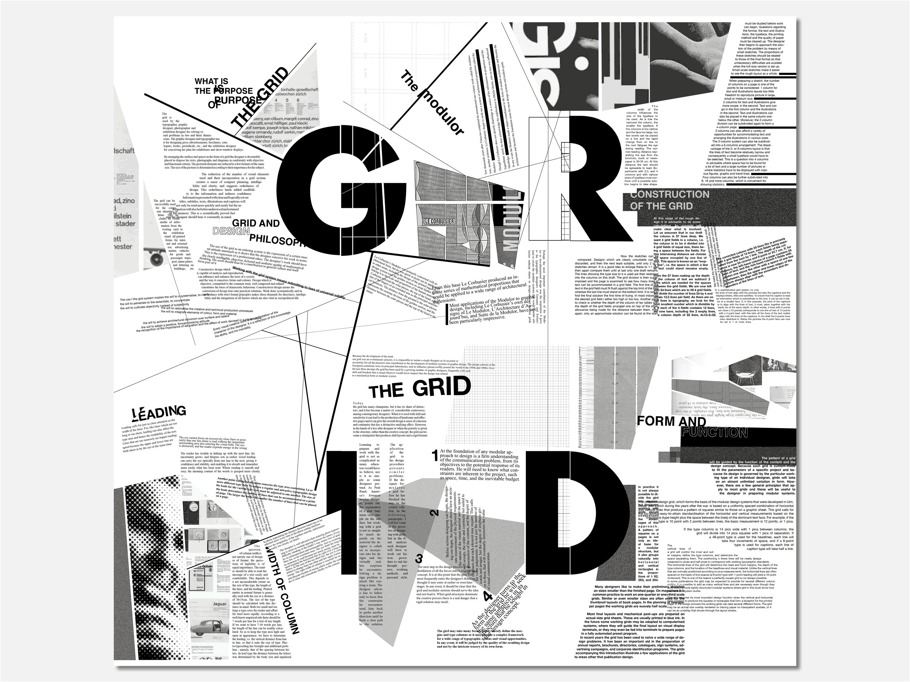
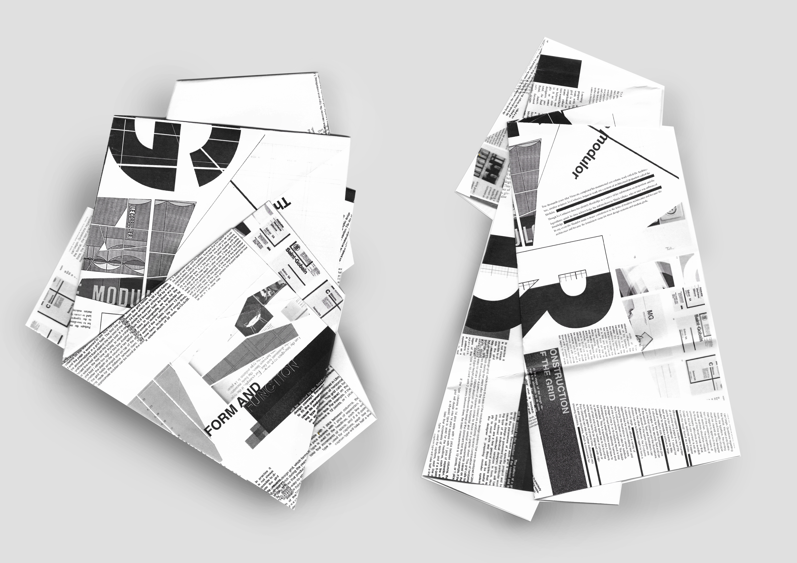
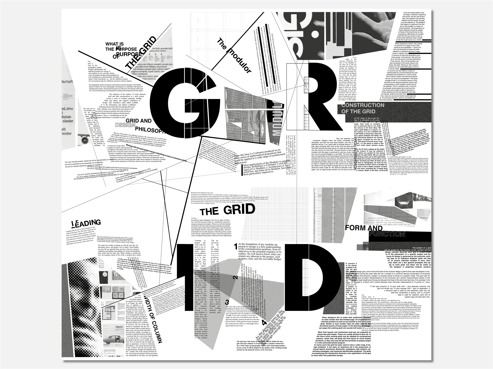
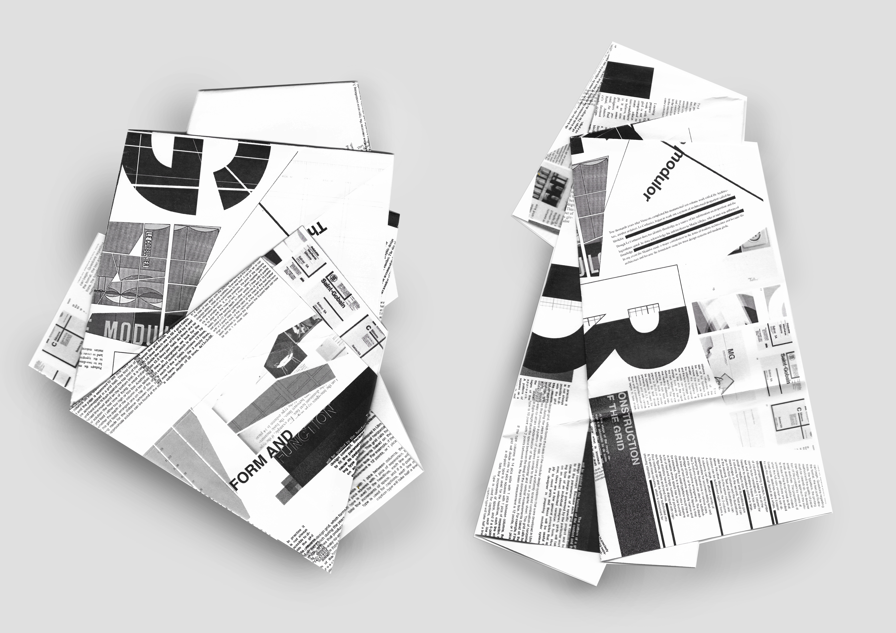

Daeun
Jeong
Off The Grid
2017
A grid system plays a vital role in graphic design as a system. It helps align page elements based on sequenced columns and rows. We use this column-based structure to place images, texts, and functions in a consistent way throughout the design. Page is a finite space and the potential of empty pages is entirely in the designer’s hands. The fundamental reason for using a grid is to improve the efficiency.
When it comes to the grid system, it is easy to find similar things anywhere in our lives. In modern society, almost everything in our life is composed of grids, and it is created in a certain format based on the grid system. My practice focuses on reinterpreting the grids of everyday life in different contexts not just in graphic design, but in others, such as city planning and architectures. I chose the simple context from ‘Grid system in Graphic Design’ by Josef Müller-Brockmann. It applied to the new grid system from London city plans. It aims to experiment using different grids from daily life and pure graphic design.
 

 



My practice focuses on telling the story through photography. I love to capture the moments of daily life and narrative around simple objects. I enjoy combining pure graphic design with photography to create the visual languages.